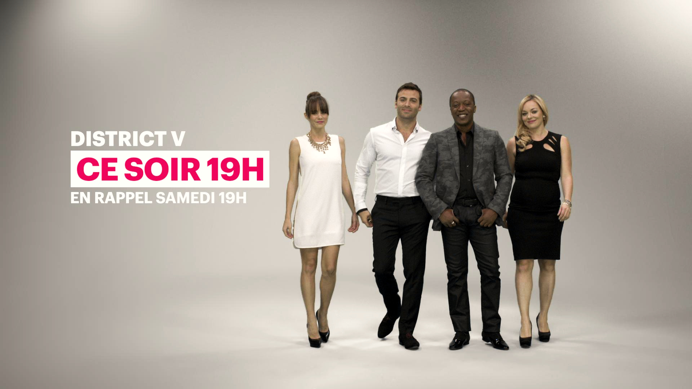

V Television V television is a broadcast channel in Quebec, Canada. I was responsible for the artistic direction, modelling, animation, shading, lighting and compositing. This rebrand consisted to rework the trailers, low third, jingles... Vimeo 


V Television
V television is a broadcast channel in Quebec, Canada. I was responsible for the artistic direction, modelling, animation, shading, lighting and compositing. This rebrand consisted to rework the trailers, low third, jingles...
Vimeo